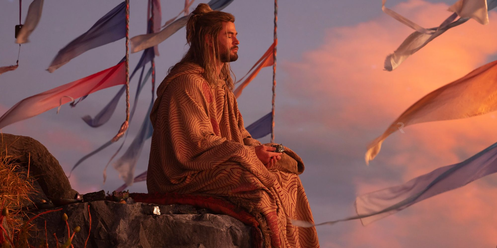
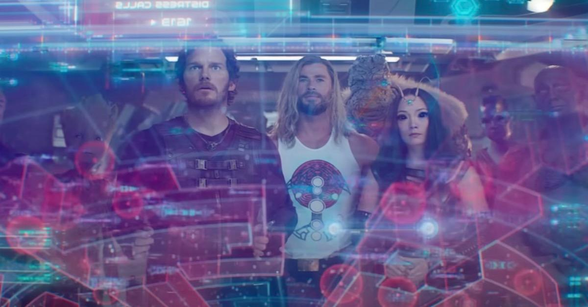
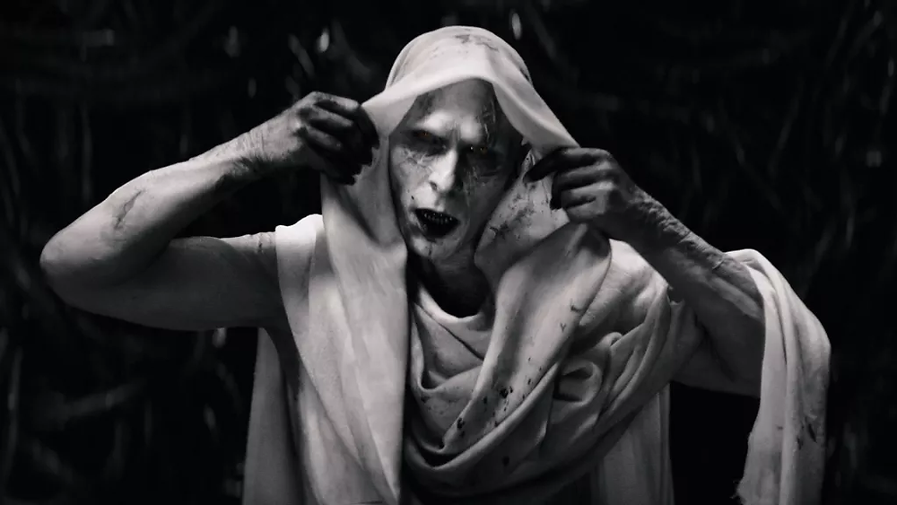

Siendo honesto, ya ni sé por qué me molesto en ir al cine a ver alguna película de Thor. Muchos de ustedes podrán contrariar mi opinión pero el dios del trueno en cada película que protagoniza se vuelve más un bufón que un personaje digno de admirar. No sé qué tanta autonomía le dieron a Waititi en la dirección pero de algo estoy seguro: desde que Disney adquirió Marvel cada película (a excepción de “Dr. Strange en el multiverso de la locura”) es más infantil que la anterior.
La historia es narrada en esta oportunidad por Korr (Waititi), quien con un toque excesivamente carismático nos va relatando todo lo acontecido en la vida del dios del trueno, desde el momento de su concesión hasta los hechos ocurridos después de “Avengers Endgame”, comenzando así, después de este film, un viaje de autodescubrimiento junto a los guardianes de la galaxia. Durante este viaje, el equipo conformado por Thor, Star-Lord, Drax, Groot, Rocket, Mantis y Nébula, ayudan a las comunidades más vulnerables de la galaxia a librar las batallas que por sí mismos no pueden ganar.
También tenemos a Jane Foster (Natalie Portman) que, por un motivo que prefiero no contarte, se hace con el Mjölnir, se convierte en la nueva Thor y se reúne con el dios del trueno, con Brunilda y con Korr para ayudarlos a librar la batalla contra el villano. Si bien este personaje nos regala algunos momentos destacados en los que logramos empatizar con ella y otros en los que decimos “oooh” y “wow”, al final queda en eso y nada más; lo cual al menos para mí, es triste considerando la excelente actriz que es Portman.

Por otro lado tenemos el nacimiento de Gorr (Christian Bale) como villano. Quien, a mi criterio, carga con el peso de la película gracias a su interpretación. Debido a una horrible tragedia para Gorr (y a una decepción importante), éste es corrompido por la necroespada y se plantea un único objetivo de aquí en adelante: acabar con la vida de todos los dioses de la galaxia. Objetivo que se toma muy en serio pues comienza con la carnicería hasta llegar a Nuevo Asgard, armar un quilombo monumental y secuestrar a los niños para tenerlos como carnada.
A mitad de la película, este equipo decide viajar a Ciudad Omnipotencia (donde viven los dioses más importantes de la galaxia) a pedir la ayuda de Zeus para enfrentar a Gorr. Zeus es otro bufón (que sorpresa) que niega su apoyo mientras humilla a Thor. Brunilda, Jane y Korr intervienen, comienza una batalla que debo admitirlo, fue cortita pero entretenida, Korr sale malherido por el rayo de Zeus, Thor se enoja mucho y hiere de gravedad a Zeus, Brunilda se roba el rayo y parten en busca de Gorr en un barco pilotado por Stormbreaker y unas cabras locas (ah sí, olvidé mencionarte las cabras antes). No entraré en detalles sobre el final, sólo diré que fue un poco predecible, incluso para Marvel.
✰ Puntuación: 5/10 ✰
Thor: Love and thunder no tiene un 1 ya que cuenta con varias cositas a su favor: el soundtrack (mayormente canciones de Guns N’ Roses), la aparición de los guardianes de la galaxia y (me pongo de pie para aplaudir y decirlo) la actuación de Christian Bale. Si las siguientes películas y series seguirán por la línea de la comedia y restarán el peso a los personajes, debo confesar que tengo miedo por el futuro de Marvel ya que, película a película van bajando el nivel que alguna vez tuvieron. ¿Te parece que fui muy duro? Ve a Instagram y comenta en el post de Thor: Love and thunder tu opinión sobre este film.